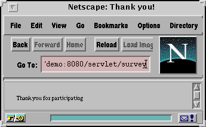

This tutorial contains,
Servlets are modules that run inside request/response-oriented servers, such as Java-enabled web servers, and extend them in some manner. For example, a servlet might be responsible for taking data in an HTML order-entry form and applying the business logic used to update a company's order database. Servlets are to servers what applets are to browsers.
The Servlet API, which you use to write servlets, assumes nothing about how a servlet is loaded, the server environment in which the servlet runs, or the protocol used to transmit data to and from the user. This allows servlets to be embedded in many different web servers.
Servlets are an effective substitute for CGI scripts: they provide a
way to generate dynamic documents that is both easier to write and
faster to run. They also address the problem of doing server-side
programming with platform-specific APIs. Servlets are developed with
the Java Servlet API, a standard Java extension. While it is
not part of the core Java framework, which must always be part of all
products bearing the Java brand, it will be made available with such
products by their vendors as an add-on package. It is
already supported by many popular web servers.
Example Uses
A few of the many applications for servlets include,
The central abstraction in the Servlet API is the
Servlet interface. All servlets implement this interface,
either directly or, more commonly, by extending a class that implements
it such as HttpServlet. The Servlet
interface provides for methods that manage the servlet and its
communications with clients. Servlet writers provide some or all of
these methods when developing a servlet.
When a servlet accepts a call from a client, it receives two objects:
one is a ServletRequest and the other is a
ServletResponse. The ServletRequest class
encapsulates the communication from the client to the server, while the
ServletResponse class encapsulates the communication from
the servlet back to the client.
The ServletRequest interface allows the servlet access to
information such as the names of the parameters passed in by the client,
the protocol (scheme) being used by the client, and the names of the
remote host that made the request and the server that received it. It
also provides the servlet with access to the input stream,
ServletInputStream, through which the servlet gets data from
clients that are using application protocols such as the HTTP POST and
PUT methods. Subclasses of ServletRequest allow the servlet
to retrieve more protocol-specific data. For example,
HttpServletRequest contains methods for accessing
HTTP-specific header information.
The ServletResponse interface gives the servlet methods
for replying to the client. It allows the servlet to set the content
length and mime type of the reply, and provides an output stream,
ServletOutputStream, and a Writer through which the
servlet can send the reply data. Subclasses of
ServletResponse give the servlet more protocol-specific
capabilities. For example, HttpServletResponse contains
methods that allow the servlet to manipulate HTTP-specific header
information.
The classes and interfaces described above make up a basic Servlet.
HTTP servlets have some additional objects that provide session-tracking
capabilities. The servlet writer can use these APIs to maintain state
between the servlet and the client that persists across multiple
connections during some time period.
Servlet Lifecycle
Servers load and run servlets, which then accept zero or more requests from clients and return data to them. They can also remove servlets. These are the steps of a servlets lifecycle. The next paragraphs describe each step in more detail, concentrating on concurrency issues.
When a server loads a servlet, it runs the servlet's init
method. Even though most servlets are run in multi-threaded servers,
there are no concurrency issues during servlet initialization. This is
because the server calls the init method once, when it
loads the servlet, and will not call it again unless it is reloading
the servlet. The server can not reload a servlet until after it has
removed the servlet by calling the
destroy method. Initialization is allowed to complete
before client requests are handled (that is, before the
service method is called) or the servlet is destroyed.
After the server loads and initializes the servlet, the servlet is
able to handle client requests. It processes them in its service
method. Each client's request has its call to the service
method run in its own servlet thread: the method receives the client's
request, and sends the client its response.
Servlets can run multiple service methods at a time.
It is important, therefore, that service methods be
written in a thread-safe manner. For example, if a
service method might update a field in the servlet object,
that access should be synchronized. If, for some reason, a server
should not run multiple service methods concurrently, the
servlet should implement the SingleThreadModel interface.
This interface guarantees that no two threads will execute the
servlet's service methods concurrently.
Servlets run until they are removed from the service, for example,
at the request of a system administrator. When a server removes a
servlet, it runs the servlet's destroy
method. The method is run once; the server will not run it again until
after it reloads and reinitializes the servlet. When the
destroy method runs, however, other threads might be
running service requests. If, in cleaning up, it is necessary to
access shared resources (such as network connections to be closed),
that access should be synchronized.
During a servlet's lifecycle, it is important to write thread-safe
code for destroying the servlet and, unless the servlet implements the
SingleThreadModel interface, servicing client requests.
For more information on writing thread-safe code, please see the
Java Tutorial.
Writing the Servlet
Servlets implement the
javax.servlet.Servlet interface. While servlet
writers can develop servlets by implementing the interface directly,
this is usually not required. Because most servlets extend web servers
that use the HTTP protocol to interact with clients, the most common
way to develop servlets is by specializing the
javax.servlet.http.HttpServlet class. This version of
the tutorial concentrates on describing this method of writing
servlets.
The HttpServlet class implements the Servlet interface
by extending the GenericServlet base class, and provides a framework
for handling the HTTP protocol. Its service method
supports standard HTTP/1.1 requests by dispatching each request to a
method designed to handle it.
By default, servlets written by specializing the
HttpServlet class can have multiple threads concurrently
running its service method. If, for whatever reason, you
would like to have only a single thread running a service
method at a time, then in addition to extending the
HttpServlet, your servlet should also implement the
SingleThreadModel interface. This does
public class SurveyServlet extends HttpServlet
implements SingleThreadModel {
/* typical servlet code, with no threading concerns
* in the service method. No extra code for the
* SingleThreadModel interface. */
...
}
Servlet writers who are developing HTTP servlets that specialize the
HttpServlet class should override the method or methods
designed to handle the HTTP interactions that their servlet will
handle. The candidate methods include,
doGet, for handling GET, conditional GET and HEAD
requests
doPost, for handling POST requests
doPut, for handling PUT requests
doDelete, for handling DELETE requests
By default, these methods return a BAD_REQUEST (400)
error. An example HTTP servlet that
handles GET and HEAD requests follows; it specializes the
doGet method. A second
example is also provided. It handles POST requests from a form by
specializing the doPost method.
The HttpServlet's service method, by
default, also calls the
doOptions method when it receives an OPTIONS request,
and
doTrace when it receives a TRACE request. The default
implementation of doOptions automatically determines what
HTTP options are supported and returns that information. The default
implementation of doTrace causes a response with a message
containing all of the headers sent in the trace request. These methods
are not typically overridden.
Whatever method you override, it will take two arguments. The first
encapsulates the data from the client, and is an
HttpServletRequest. The second encapsulates the response
to the client, and is an HttpServletResponse. The
following paragraphs discuss their use.
An HttpServletRequest object provides access to HTTP
header data, such as any cookies found in the request and the HTTP
method with which the request was made. It, of course, allows the you
to obtain the arguments that the client sent as part of the request.
How you access the client data might depend on the HTTP method of the
request.
getParameterValues method, which will return the value
of a named parameter. (The method
getParameterNames provides the names of the
parameters.) You can also manually parse the request.
getQueryString method will return a
String to be parsed.
BufferedReader returned by the
getReader method; if you expect binary data, then it
should be read with the ServletInputStream returned by the
getInputStream method.
getParameterValues method or one of the methods that allow
you to parse the data yourself. They can not be used together in a
single request.
For responding to the client, an HttpServletResponse
object provides two ways of returning the response data to the user.
You can use the writer returned by the
getWriter method or the output stream returned by the
getOutputStream method. You should use
getWriter to return text data to the user, and
getOutputStream for binary data.
Before accessing the Writer or OutputStream, HTTP header data should
be set. The HttpServletResponse class provides methods to
access the header data, such as the content type and encoding, and
content length of the response. After you set the headers, you may
obtain the writer or output stream and send the body of the response to
the user. Closing the writer or output stream after sending the
response to the client allows the server to know when the response is
complete.
Example of an HTTP Servlet that handles the GET and HEAD methods
/**
* This is a simple example of an HTTP Servlet. It responds to the GET
* and HEAD methods of the HTTP protocol.
*/
public class SimpleServlet extends HttpServlet {
public void doGet(HttpServletRequest req, HttpServletResponse res)
throws ServletException, IOException
{
// set header field first
res.setContentType("text/html");
// then get the writer and write the response data
PrintWriter out = res.getWriter();
out.println("<HEAD><TITLE> SimpleServlet Output</TITLE></HEAD><BODY>");
out.println("<h1> SimpleServlet Output </h1>");
out.println("<P>This is output is from SimpleServlet.");
out.println("</BODY>");
out.close();
}
public String getServletInfo() {
return "A simple servlet";
}
}
The example above shows the code for the entire servlet. The
doGet method, because it is returning text to the client,
uses the HttpServletResponse's getWriter
method. It sets the sets the response header field, content type,
before writing the body of the response, and closes the writer after
writing the response.
In addition to doGet, there is a second method,
getServletInfo. More information on the
getServletInfo method appears in a
later section. Because this servlet is an example shipped with the
release, it is already compiled. To try the servlet, run it in the servletrunner.
Example of an HTTP Servlet that handles the POST method
The following example processes data POSTed by a form. (This tutorial assumes that you know HTML. It does not attempt to instruct you on how to develop the forms, only on how to process one using a servlet.) The form looks like this:
<html>
<head><title>JdcSurvey</title></head>
<body>
<form action=http://demo:8080/servlet/survey method=POST>
<input type=hidden name=survey value=Survey01Results>
<BR><BR>How Many Employees in your Company?<BR>
<BR>1-100<input type=radio name=employee value=1-100>
<BR>100-200<input type=radio name=employee value=100-200>
<BR>200-300<input type=radio name=employee value=200-300>
<BR>300-400<input type=radio name=employee value=300-400>
<BR>500-more<input type=radio name=employee value=500-more>
<BR><BR>General Comments?<BR>
<BR><input type=text name=comment>
<BR><BR>What IDEs do you use?<BR>
<BR>JavaWorkShop<input type=checkbox name=ide value=JavaWorkShop>
<BR>J++<input type=checkbox name=ide value=J++>
<BR>Cafe'<input type=checkbox name=ide value=Cafe'>
<BR><BR><input type=submit><input type=reset>
</form>
</body>
</html>
The servlet writes the form data to a file, and responds to the user
with a thank you message. The doPost method of the
servlet looks like this:
/**
* Write survey results to output file in response to the POSTed
* form. Write a "thank you" to the client.
*/
public void doPost(HttpServletRequest req, HttpServletResponse res)
throws ServletException, IOException
{
// first, set the "content type" header of the response
res.setContentType("text/html");
//Get the response's PrintWriter to return text to the client.
PrintWriter toClient = res.getWriter();
try {
//Open the file for writing the survey results.
String surveyName = req.getParameterValues("survey")[0];
FileWriter resultsFile = new FileWriter(resultsDir
+ System.getProperty("file.separator")
+ surveyName + ".txt", true);
PrintWriter toFile = new PrintWriter(resultsFile);
// Get client's form data & store it in the file
toFile.println("<BEGIN>");
Enumeration values = req.getParameterNames();
while(values.hasMoreElements()) {
String name = (String)values.nextElement();
String value = req.getParameterValues(name)[0];
if(name.compareTo("submit") != 0) {
toFile.println(name + ": " + value);
}
}
toFile.println("<END>");
//Close the file.
resultsFile.close();
// Respond to client with a thank you
toClient.println("<html>");
toClient.println("<title>Thank you!</title>");
toClient.println("Thank you for participating");
toClient.println("</html>");
} catch(IOException e) {
e.printStackTrace();
toClient.println(
"A problem occured while recording your answers. "
+ "Please try again.");
}
// Close the writer; the response is done.
toClient.close();
}
The doPost method uses the
getParameterNames and getParameterValues
methods to get the form data. Because it returns text to the client,
doPost calls the getWriter method. It sets
the sets the response header field, content type, before writing the
body of the response, and closes the writer when the response is
complete.
Lifecycle Methods
Servlets that manage resources do so by overriding the lifecycle
methods init and destroy. These servlets might
need to be given arguments at startup, in
order to initialize correctly.
Overriding the
Init Method
During initialization, the servlet should prepare the resources it
manages, to ready the servlet for accepting service requests. It can
do this without regard for multi-threading concerns, since there is
only a single thread running on behalf of the servlet during
initialization. As soon as the init method returns, the
servlet can receive client requests. If, for some reason, the
servlet's required resources can not be made available (for example, a
required network connection can not be established), or some other
initialization error occurs that would make it impossible for the
servlet to handle requests, the init method should throw
an UnavailableException exception.
The init method takes a ServletConfig
object as a parameter. The method should save this object, so that it
can be returned by the getServletConfig method. The
simplest way to do this is to have the new init method
call super.init. If you do not do this, you should store
the ServletConfig object yourself, and override the
getServletConfig method so that it can obtain the object
from its new location.
An example init method follows. It is the
init method from the Survey Servlet, which accepts input
from a form and stores it in a file. In order store the survey
information, it needs a directory. It receives the directory as an
initialization parameter; initialization parameters are discussed in
the next section.
public void init(ServletConfig config)
throws ServletException
{
super.init(config);
//Store the directory that will hold the survey-results files
resultsDir = getInitParameter("resultsDir");
//If no directory was provided, can't handle clients
if (resultsDir == null) {
throw new UnavailableException (this,
"Not given a directory to write survey results!");
}
}
As you can see, this init method calls the
super.init method to manage the ServletConfig object. The
init method also sets a field, resultsDir,
with the directory name that is provided as an initialization
parameter. If no directory name was provided, the servlet throws an
unavailable exception. If the init method completes successfully, the
servlet can then handle client requests.
Initialization Parameters
The specification of initialization parameters is server-specific. For example, they are specified with a property when a servlet is run with the servlet runner. This tutorial contains a general explanation of properties, and how to create them.
However the initialization parameters are specified, they are always
obtained the same way: with the
getInitParameter method. This method takes the
parameter name as an argument. The example
init method calls getInitParameter. If,
for some reason, you need to get the parameter names, you can get them
with the
getParameterNames method.
Overriding the
Destroy Method
When a server unloads a servlet, it calls the servlet's
destroy method. The destroy method should
undo any initialization work and synchronize persistent state with the
current in-memory state. This section begins with a description of how
to write a simple destroy method, then describes how to structure a servlet if threads
running its service method might still be running when the
destroy method is called.
Though it is often the case that a servlet that overrides the
init method must also override the destroy
method to undo that initialization, this is not required. For example,
the phone servlet, whose init method is used as an
example, does not have a corresponding destroy method.
Because initialization involves reading a file and using its contents
to initialize a shared data structure, there is no work to undo when
the server is finished with the servlet.
For many servlets, however, there is initialization work that must
be undone. For example, assume there is a servlet that opens a
database connection during initialization. Its destroy
method, shown as an example below, would close that connection.
/**
* Cleans up database connection
*/
public void destroy() {
try {
con.close();
} catch (SQLException e) {
while(e != null) {
log("SQLException: " + e.getSQLState() + '\t' +
e.getMessage() + '\t' +
e.getErrorCode() + '\t');
e = e.getNextException();
}
} catch (Exception e) {
e.printStackTrace();
}
}
Coping with Service Threads at Servlet Termination
When a server removes a servlet, it typically calls destroy after all service calls have been completed, or a server-specific number of seconds have passed, whichever comes first. If your servlet has operations that take a long time to run (that is, they may run longer than the server's grace period), then threads could still be running when destroy is called. The servlet writer is responsible for making sure that any threads still handling client requests complete; the remainder of this section describes a technique for doing this.
A servlet with potentially long-running service requests should keep
track of how many service methods are currently running.
Its long-running methods should periodically poll to make sure that
they should continue to run. If the servlet is being destroyed, then
the long-running method should stop working, clean up if necessary, and
return.
For example, the instance variable that counts the number of
service methods running could be called
serviceCounter, and the indicator of whether the servlet
is being destroyed could be an instance variable called
shuttingDown. Each variable should have its own set of
access methods:
public ShutdownExample extends HttpServlet {
private int serviceCounter = 0;
private Boolean shuttingDown;
...
//Access methods for serviceCounter
protected synchronized void enteringServiceMethod() {
serviceCounter++;
}
protected synchronized void leavingServiceMethod() {
serviceCounter--;
}
protected synchronized int numServices() {
return serviceCounter;
}
//Access methods for shuttingDown
protected setShuttingDown(Boolean flag) {
shuttingDown = flag;
}
protected Boolean isShuttingDown() {
return shuttingDown;
}
}
The service method should increment the service counter
each time it is entered and decrement it each time it returns:
protected void service(HttpServletRequest req, HttpServletResponse resp)
throws ServletException, IOException
{
enteringServiceMethod();
try {
super.service(req, resp);
} finally {
leavingServiceMethod();
}
}
The destroy method should check the
serviceCounter, and if there are any long-running methods,
set the shuttingDown variable. This variable will let the
threads still handling client requests know that it is time to shut
down. The destroy method should then wait for the
service methods to complete, in order to provide a clean
shutdown.
public void destroy() {
/* Check to see whether there are still service methods running,
* and if there are, tell them to stop. */
if (numServices() > 0) {
setShuttingDown(true);
}
/* Wait for the service methods to stop. */
while(numService() > 0) {
try {
thisThread.sleep(interval);
} catch (InterruptedException e) {
}
}
}
The long-running methods should check this variable, and interrupt
their work if neceesary:
public void doPost(...) {
...
for(i = 0; ((i < lotsOfStuffToDo) && !isShuttingDown()); i++) {
try {
partOfLongRunningOperation(i);
} catch (InterruptedException e) {
}
}
}
Some applets and applications, for example, the Java Web Server
Administration Tool, display information about a servlet. This
information can include a short description of the purpose of the
servlet, its author, and perhaps its version number. The Servlet API
provides a method to return this information,
getServletInfo. By default, this method returns null.
While servlet writers are not required to override this method, it is
strongly recommended. The simple servlet, shown as an example earlier,
overrides this method:
/**
* This is a simple example of an HTTP Servlet. It responds to the GET
* and HEAD methods of the HTTP protocol.
*/
public class SimpleServlet extends HttpServlet {
...
public String getServletInfo() {
return "A simple servlet";
}
}
servletrunner to Run a ServletOnce you have written your servlet, you can run it in
many web servers, or in the servletrunner. Where ever
you decide to run your servlet, there are certain pieces of data that
you might want or need to specify. When you are using
servletrunner you do this with properties. The next
section describes a servlet's properties, and
how to store them. Following that, there
is a section on how to run servlets in
servletrunner.
Properties
Properties are key-value pairs, used for the configuration,
creation, and initialization of a servlet. For example,
servlet.phone.code=PhoneServlet is a property whose key is
servlet.phone.code and whose value is
PhoneServlet.
There are two properties for servlets. One is
Using the servlet.name.code, whose value is the servlet's
class name. The other property is
servlet.name.initargs, whose value holds the
initialization parameters for the servlet. Both properties, servlet.name.code and servlet.name.initargs,
are discussed in more detail below.
code Property
The Syntax of the servlet.name.code property names your
servlet by associating its name with its class. If your servlet
uses initialization parameters, this property is required. It allows
the server to associate the servlet object with its initialization
arguments: they both have the same name. Even if your servlet
does not use initialization parameters, it is recommended that it have
this property, so that clients can access the servlet using its
name.
Initargs Property
The value of the servlet.name.initArgs property holds the servlet's initialization parameters. The syntax of a single parameter is parameterName=parameterValue. The entire property (the entire key-value pair) must be a single logical line. For readability, you can use the backquote syntax to allow the property to span multiple lines in the file. For example, the argument to the phone servlet looks like this:
servlet.phone.initArgs=\
phonelist=servlets/phonelist
If there are multiple initialization parameters, they are specified as a comma-delimited list. For example, the arguments to a database demo could look like this:
servlet.dbdemo.initArgs=\ username=fill_in_the_user,\ password=fill_in_the_password,\ owner=fill_in_the_nameThe Property File
Properties are stored in a file that is, by default, called
"servlet.properties", though you can specify another name when
servletrunner is started. The file should hold the
properties for all the servlets that servletrunner will
run. It should be plain text; you can create it in an editor. Here is
an excerpt of a servlet.properties file as an example:
# phone servlet (sample.html)
servlet.phone.code=PhoneServlet
servlet.phone.initArgs=\
phonelist=servlets/phonelist
# bulletin board servlet
servlet.bboard.code=BBoardServlet
# order entry servlet
servlet.dbdemo.code=OrderEntryServlet
servlet.dbdemo.initArgs=\
username=fill_in_the_user,\
password=fill_in_the_password,\
owner=fill_in_the_name
If you would like to run your servlet in a web server, please see
that server's documentation for instructions. This section explains
how to run the servlet in the servletrunner utility that
comes with this release.
The servletrunner is a small utility, intended for
testing. It is multithreaded, so it can run more than one servlet. It
can be used, therefore, to run multiple servlets simultaneously, or to
test one servlet that calls other servlets in order to satisfy client
requests. Unlike some web servers, it does not automatically reload
servlets when they are updated. Because it is small, however, there is
very little overhead associated with stopping and restarting it in
order to use a new version of a servlet.
The servletrunner is in the
<JDK>/bin directory. Invoking it with the -help
flag shows a usage message without running it:
% ./bin/servletrunner -help Usage: servletrunner [options] Options: -p port the port number to listen on -b backlog the listen backlog -m max maximum number of connection handlers -t timeout connection timeout in milliseconds -d dir servlet directory -r root document root directory -s filename servlet property file name -v verbose output %
In order to see the default values of these options, you can call
servletrunner with the -v switch. This will, however,
start the servlet runner. Just stop it after you have obtained the
information, if you are not ready to run it yet, or want it to run with
something other than the default values.
% ./bin/servletrunner -v Server settings: port = 8080 backlog = 50 max handlers = 100 timeout = 5000 servlet dir = . document dir = . servlet propfile = .:servlet.properties
Once the servletrunner is executing, you run servlets by calling them directly in your browser, or as the forms example shows, by using a form that calls a servlet to process its data. The URL for a servlet has the following general form:
http://machine-name:port/servlet/servlet-namewhere servlet-name corresponds to the name you have given your servlet. For example, to run the Phone Servlet, which has the property
servlet.phone.code=PhoneServlet, you would use the
following URL. (It assumes that servletrunner is running on your
machine, localhost, at port 8080, and that the phone
servlet is located in the servlet directory provided to
servletrunner at startup:
http://localhost:8080/servlet/phoneAnother example, the survey servlet, is run as a result of submitting a form. The URL used for the servlet by the survey-form in the HTML file is:
http://demo:8080/servlet/surveyHere is the output of the survey servlet:

 Top
java-server-feedback@java.sun.com
Top
java-server-feedback@java.sun.com